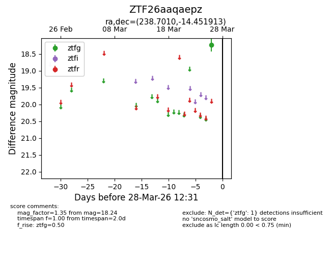
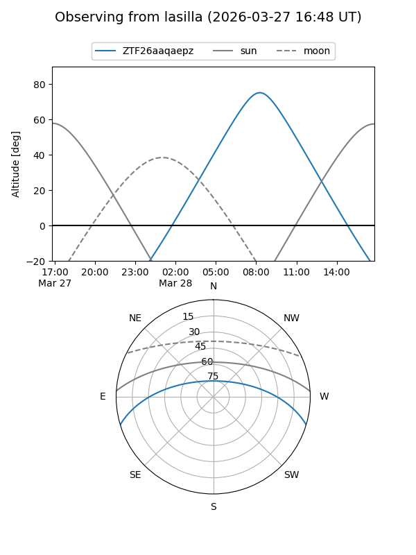
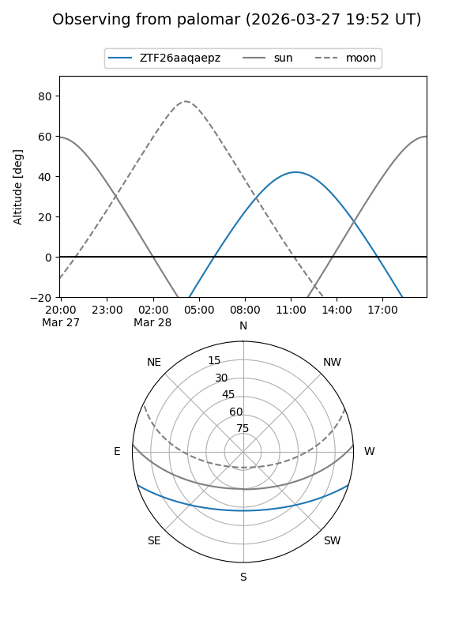

ZTF26aaqaepz
Target ZTF26aaqaepz at 2026-03-28 12:35
Aliases and brokers:
FINK: link
Lasair: link
ALeRCE: link
alt names
ZTF26aaqaepz (ztf,fink_ztf)
Coordinates:
equatorial (ra, dec) = 238.7010,-14.45191
equatorial (HMS+DMS) = 15:54:48.24,-14:27:06.89
galactic (l, b) = (355.6065,+29.11661)
Flags:
Photometry:
last ztfg=18.24
1 ztfg detections
Lightcurve

Visibility


Additional plots